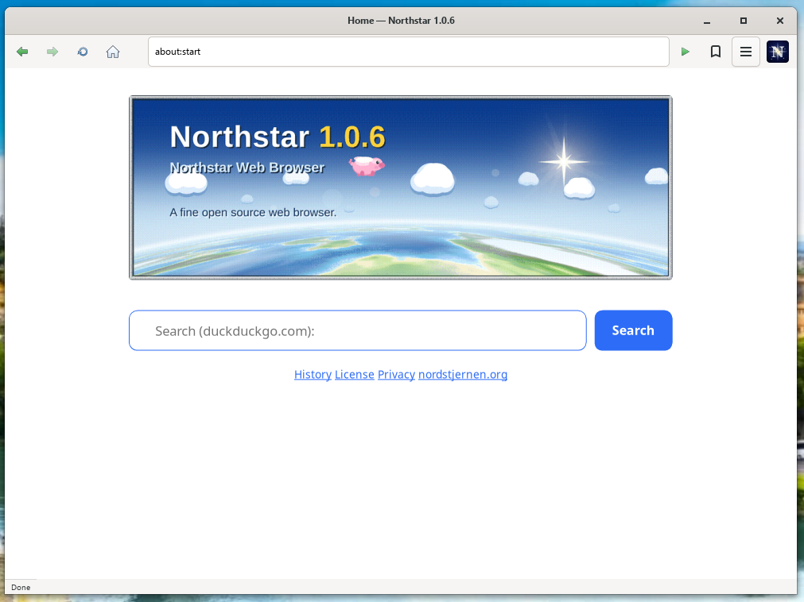

Northstar Browser 1.0.6 released!
Today, 31 July 2026, we are pleased to announce the release of Northstar 1.0.6. Northstar is the free-software edition of the Nordstjernen project: a single-window, single-page, single-process desktop browser built from the same clean-room C engine, licensed under the GNU General Public License, version 3 or later. It runs on Linux, macOS and Windows.
This release is mostly about running real sites. The layout, CSS and DOM gaps that kept pages like lichess, chess.com, bbc.com and Hacker News from rendering correctly are closed, and the text and cascade paths were rebuilt around caches that make a page load substantially faster.
Northstar Browser version 1.0.6 is available now! Read the full release notes here, or jump straight to the downloads.
It ships alongside Nordstjernen 1.0.22, the source-available flagship built from the same engine.
« About the Northstar Browser · Back to nordstjernen.org
{kind=link}

about:start page — the splash redrawn for the release. more screenshots »highlights
- Faster text. Text is laid out through ns-pango, a Pango fork carried as a subproject, which adds the process-wide shaping cache Pango has no place for. Layout time falls 25% on a text-heavy page and 38% on a table-heavy one. Shaping results are unchanged, and verified byte-identical across a corpus covering RTL, bidi, CJK, small-caps and font features.
- An indexed cascade. The CSS cascade indexes
:is()and:where()subjects and stops allocating per selector test. On a page built to exercise this the initial cascade falls 52% and the whole headless run 16%; the css and dom test subset gains 826 subtest passes from tests that previously ran out of time. - Grid, largely rebuilt. Named lines,
min-contentandmax-contenttracks, tracks in any length unit, correct intrinsic widths for a grid container, and area-placed items that honouralign-items. - Web Audio actually renders.
OfflineAudioContextused to resolve a buffer of zeros; oscillators, gain, compressor, biquad, delay, wave shaping and buffer playback are now implemented in the engine. - Colour. Relative colour syntax, the
color()function across nine colour spaces, and one shared scanner for all six colour functions — which rejects the malformed forms that used to parse and accepts a colour split across lines.
layout and CSS
- A single flex line is as tall as the container says, rather than growing to the tallest item, and
align-items: baselineandalign-self: baselinework instead of falling through toflex-start. - An
inline-block,inline-flexorinline-gridsits on the text baseline by the baseline of its own last line box, as CSS 2.1 requires. - Flex and grid items measure intrinsic sizes in the font they will actually be drawn in, so web-font text no longer wraps mid-phrase. An absolutely positioned box with
width: autogets a real shrink-to-fit width, measured by shaping the text rather than guessed at 0.65em per character. border-radius: 50%paints a circle. Percentage radii were treated as pixels andcalc()radii dropped; elliptical corners now work.- CSS tokenization closes an open function at end of input, so setting an unterminated value no longer swallows the rest of an inline style.
- Table cells default to
vertical-align: middle, an image is drawn inside its own borders, padding and margin, and a percentage insidemin(),max()andclamp()resolves against the box rather than the viewport. - An SVG with a
viewBoxbut no width or height is fitted to the 300×150 default object size instead of being rasterised square and stretched. - Dynamic
:has()selectors update after class, attribute and child-list mutations; the selector-invalidation test subset gains 311 subtests. hypot()returns a length, overflowing integer calculations clamp, large numbers no longer serialize in exponent notation, and 3D transforms keep their Z component.
DOM, CSSOM and JavaScript
getComputedStyleresolves every property it enumerates. It listed 218 properties and returned the empty string for 126 of them.document.styleSheetsincludes linked sheets with theirhrefand rules — one test page went from 13 reachable rules to 1895.- The DOM insertion methods run the insertion steps, so a script inserted through
append,before,replaceWithand friends executes, and a custom element gets itsconnectedCallback. AbortSignalis a real interface object, sosignal instanceof AbortSignalanswers instead of throwing;MessagePortgains the same in the window. Event-listener objects follow the Web IDL callback-interface algorithm.- Checkbox and radio activation follows HTML's pre-activation and canceled-activation steps; three focused tests move from 52/80 to 80/80.
CSSStyleSheet.insertRule()anddeleteRule()enforce their arguments, andaddRule()/removeRule()work — that interface test moves from 8/17 to 17/17. - Shorthands through the CSSOM —
overflow,gap,grid-areaand the four-value shorthands — no longer silently drop the declaration, computed position values are normalized, andtransform-originandperspective-originserialize as lengths. - A dialog opened from script renders and a modal one is centred; a finished keyframe animation keeps the value
animation-fill-modesays it should; a mouse or pointer event carries the window it was dispatched in; and a positioned box answers the pointer in the layer it paints in, so a fixed high-z-indexoverlay is clickable. - Instantiating a module through the WebAssembly JS API runs the start section and nothing else, which is what Emscripten modules expect. Workers get the APIs the polyfills already implement — thirteen globals differed between a worker and the window — and share the storage partition of the page that started them, so IndexedDB works there.
networking and performance
- A page on an origin that does not speak QUIC no longer stalls for the whole connect timeout. Requests ask for HTTP/2 and are upgraded to HTTP/3 through the alt-svc cache. Acid3 loads in 2.2 seconds instead of 15.5;
NS_FORCE_HTTP3=1still asks for HTTP/3 outright. - Text shaping is cached a word at a time rather than a run at a time, and a paragraph's items are cached too. Over a 200 KB page, shape-cache misses fall from 5265 to 155, HarfBuzz drops from 28.6% of the process to 1.5%, and layout goes from 159 ms to 112 ms.
- Line, word and sentence breaks are cached: the whole headless page load runs 5.75% fewer instructions, the text engine alone 20% fewer. The text caches are sharded sixteen ways, taking four-thread throughput from about 79,000 to about 98,000 layouts/s.
- An IndexedDB write no longer walks the origin's whole storage directory on every put, and the font metrics behind the
ex,ch,capandicunits are measured once per font rather than once per length.
user interface
prefers-color-schemereports what the desktop is actually wearing, and the internal pages gain the dark half they never had.- An error page appears whenever a navigation has nothing to render, not only for
https://failures. - The status line clears when the pointer leaves a link and when a load finishes, and floats over the page only while it has something to say.
- The toolbar reports the page zoom, with steps at 90, 100, 110, 125 and 150. Back and forward are green, reload is blue, and a red stop button appears while a page is loading.
- The bookmark button shows whether the page is bookmarked, Escape closes the find bar and restores the URL of the page on screen, and the title bar no longer doubles the product name.
- The toolbar menu covers New Window, Zoom In, Zoom Out, Reset Zoom, Full Screen, History and the two save entries, each naming its shortcut.
- The title bar is shorter, giving the page the height back; a single-line text field shows as many characters as its box has room for; a
#fragmentstays anchored while the page finishes loading; a popover menu takes the height its items need; andabout:northstarlists the user agent as a request actually resolves it.
documentation and known limitations
A new docs/compliance.md records where the engine stands against the HTML and CSS specifications, how to reproduce the web-platform-tests scores, and the known structural gaps.
- Web Audio renders mono, and
AudioParamautomation curves are ignored — a parameter reads as its current value for the whole render. - The stop button ends the loading state and marks the frame stale, but does not abort the network request behind it.
<video>plays MPEG-1 only. There is no MPEG-4 or H.264 decoder, and no Media Source Extensions, so streaming video sites do not play.
about Northstar
Free software. Northstar is licensed under the GNU GPL, version 3 or later — use it, read it, change it, share it.
One process, one page. All rendering happens in a single compact process — about 149,000 lines of original C, excluding the vendored WAMR, Wuffs and audio decoders — prioritizing auditability. On Linux it runs behind a Landlock filesystem sandbox (plus PR_SET_NO_NEW_PRIVS) with a default-deny seccomp syscall filter. No JIT.
Standards-first. The same engine lineage as Nordstjernen: lexbor v3.0.0 for HTML/CSS, quickjs-ng v0.15.1 for JavaScript, ns-pango for text, WAMR for WebAssembly, Wuffs for image decoding. Modern CSS (flex, grid, transforms, gradients, keyframes), Shadow DOM, custom elements, the Navigation API, service workers and WebExtensions with local persistence. Behaviour is measured against the spec text, section by section.
What it leaves out. Compared with Nordstjernen: no multi-window browsing, no per-tab renderer processes, no WebGL or WebGPU, no embedded PDF viewer. Audio playback (MP3, MP2, Ogg Opus/Vorbis) is included, and video is MPEG-1 only — an ISO standard whose patents have expired, so it costs no dependency and no licence, but also not a format the modern web serves.
It sends no telemetry and no update pings, and includes no AI-style web APIs.
Read the full Northstar documentation, or see the comparison of Nordstjernen and Northstar on the home page.
news
31 JUL 2026 · Northstar 1.0.6 released — a rebuilt grid, an indexed CSS cascade, faster text through ns-pango, Web Audio that renders, and relative colour syntax. Release notes »
31 JUL 2026 · Nordstjernen 1.0.22 released — real-site layout fixes, faster text and regular expressions, and a much more capable Android app. Announcement » · Release notes »
28 JUL 2026 · Northstar 1.0.5 released — in-engine SVG, WebP/APNG, MPEG-1 video playback, and much better HTML, CSS and JavaScript compatibility. Announcement » · Release notes »
23 JUL 2026 · Northstar 1.0.4 released — a maintenance release. Release notes »
22 JUL 2026 · Northstar 1.0.3 released — Media Queries Level 4, CSSOM used values, and use-after-free fixes. Announcement » · Release notes »
18 JUL 2026 · Northstar 1.0.1 released — the first public release of the GPL edition. Release notes »
download
Latest tagged release: Northstar 1.0.6 — released 31 July 2026. full release notes »
| Windows | northstar-1.0.6-windows-x86_64.zip — self-contained, 57 MB compressed |
|---|---|
| Fedora (source RPM) | northstar-1.0.6-1.fc44.src.rpm |
| Source | 1.0.6.tar.gz · 1.0.6.zip |
| All releases | github.com/nordstjernen-web/northstar-browser/releases |
The Windows build needs no installer and no MSYS2 — extract it anywhere and run
northstar.exe. Windows marks anything downloaded from the internet as
blocked, so before extracting, right-click the .zip, choose Properties,
tick Unblock at the bottom of the General tab and press OK. Doing it on the
archive first saves repeating it on northstar.exe, since the mark is
copied to every file extracted from a blocked archive.
On Linux and macOS, build from source with meson — see the README or the build instructions.